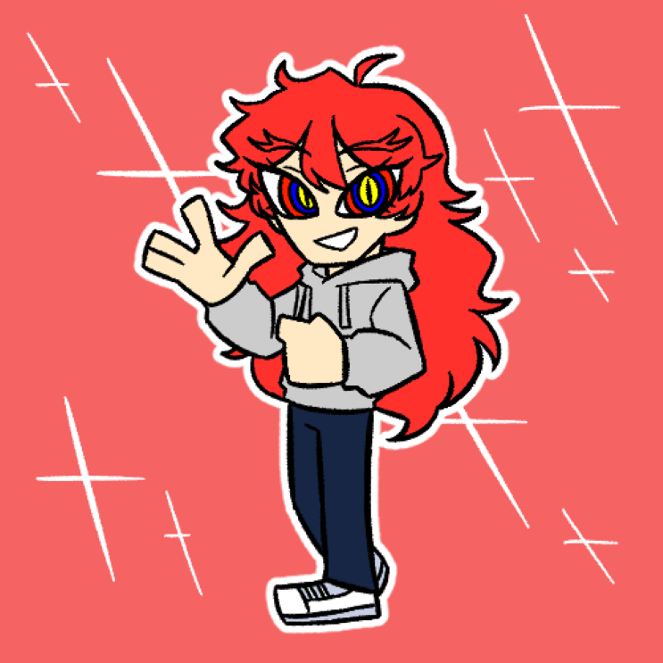

| 레이 Rei |
|
| (Nio님의 커미션 그림) | |
| 별칭 | 레이넌트, 빨강새 |
| 나이 | 외관 상 : 23세 |
| 종족 | 나비 |
| Sex / Gender | 남성 / 시스젠더 |
| 직업 | |
| 키 | 172cm |
| 몸무게 | 65kg |
| 혈액형 | AB형 |
| 생일 | 5월 17일 |
FNI
1. 외형
저멀리서도 눈에 잘 띄는 새빨간 머리카락은 삐죽삐죽하게 뻗쳐서 마치 붉은 고슴도치를 연상시킨다. 최근에 다시 머리를 길러
허리까지 내려오는 긴 장발이다. 되도록이면 긴 생머리를 고수하며, 묶는 것은 선호하지 않는다.머릿결은 약간 뻣뻣해서 잘 뻗치는 편.
눈매가 상당히 사납다. 눈꼬리는 바짝 올라가있고 눈이 전체적으로 커서 날카로운 인상을 준다. 속눈썹이 관리를 자주 하는 사람의 것보다도
훨씬 길다. 눈동자가 바깥에서부터 붉은 색, 남색, 노란 색의 세 겹으로 특이한 형태를 띄고 있다. 동공 또한 고양이 동공.
샛노란 피부는 여행을 자주 다닌다는 것을 반증하듯, 가까이서 보면 적당히 그을려있다. 근육량이 적어 겉으로만 봐도 여리여리해보이는
편이다. 손목도 얇아 한 손에 쏙 잡히는 정도.
의복을 고르는 기준은 오직 편함이다. 외출을 할 때에도, 집에 머물 때에도 편하고 널널한 의상을 고수한다. 가장 자주 입는 건은
밝은 회색의 후드티와 청바지와 흰색 스니커즈. 여기에 후드티 색상만 가끔 돌려가며 입는다. 여러모로 옷에는 돈을 쓰지 않는 타입.
2. 성격
[ 차분한 ]
나른한 템포의 행동과 말투는 냉철함과는 거리있는 차분함을 보여준다. 어찌보면 가끔은 의욕이 너무 없다는
소리를 듣기도 하나, 그러나 일은 하나씩, 차례대로, 차분하게 처리하는 것이 신조라서 그렇다는 듯 하다. 필요치 않으면 서두르지 않는다.
그러다보니 주어진 일을 할 때의 그는 느긋하고 가끔은 여유로움 마저 돋보인다.
" 아무것도 아니야, 잠시 생각 좀 해보느라. "
[ 소심한 ]
남들을 잘 챙겨주지만 정작 본인은 할 말도 제대로 못하고 우물쭈물대는 경향이 있다. 특히 자신의
생각을 말하거나 경험담을 늘어놓는 것이 서툴다. 그래서 혼자 여행하는 것을 선호하는지도... 그래도 지인 이상의 관계가 된 친구들에게는
나름 자기표현을 할 줄 안다. 그 이상의 의견 피력은 아직 서툴지만.
" 그... 저는 그냥 말하신대로 할게요! "
[ 다정한 ]
항상 약자 주변에 있을 것이며, 누군가 도움을 필요로 할 때에는 절대 마다하지 않는다. 무언가 원하는 것이 있을 때에는
고민할 것 없이 요청하라. 내키는 선 까지라면 거절하지 않고 흔쾌히 도울 것이다. 정신적 위안 또한 마찬가지다. 이는 모든 이에게 동일하게 적용되며,
어찌보면 박애주의 기질이 은근히 있다고 볼 수도 있다.
" 응, 뭐가 필요해? "
3-1. 호불호
바다 풍경 감상을 굉장히 좋아한다. 특히 가을~겨울 즈음의 새벽과 아침의 바다를 좋아한다. 자신이 좋아하는 풍경들을 더 오래
새겨두기 위해 DSLR 카메라를 가지고 다니며 사진을 촬영한다. 그렇게 찍은 사진은 인화시키기보다는 그냥 하드디스크나 핸드폰으로 옮겨
자주 꺼내본다.
모든 종류의 동물들을 박애적으로 좋아한다. 단순히 좋아한다기보다는 박애의 의미로 사랑하는 편에 가깝다. 흔히들 호감을 갖는
털동물부터 새, 파충류, 물고기 등 대부분의 동물을 아끼고 사랑해준다. 그래서 위험에 처한 동물을 보면 내버려 두지 못하는 편. 혼자 동물
다큐멘터리나 예능 프로그램을 보며 동물들의 절절한 사연에 눈물 흘리는 때도 많다.
싫어하는 것은 오이. 독특하게 느껴지는 오이의 향을 싫어해서 절대 입에 대지 않는다. 생 오이도, 무침도, 익힌 오이도 전부
싫어한다. 샌드위치나 햄버거에 들어간 오이를 모르고 실수로 씹게 되면 순식간에 일그러지는 표정을 구경할 수 있다.
3-2. 취미
취미는 단연 배낭여행과 사진 촬영. 여행을 굉장히 좋아해서, 자주 배낭여행을 즐기는 것을 넘어서서 떠돌이 생활을 주로 한다. 일용직으로 번 돈을 다른 곳에 사용하지 않고 한 번 여행을 떠나는 것에 전부 쏟아붓는다. 여행하는 지역은 국내의 가까운 지역들 뿐만 아니라 해외까지 열심히도 돌아다닌다. 특히 잘 알려지지 않은 관광명소들을 돌아다니며 아름다운 풍경을 사진 찍는 것을 좋아한다. 이동하는 도중에 틈틈히 글을 쓰기도. 가끔 쓴 글과 사진을 엮어 책으로 출간하기도 했었다. 현재는 돈이 부족하거나 반응이 좋지 않아 블로그에 올리는 정도로 만족하고 있다. 역마살이라도 끼었냐는 소리를 자주 듣지만, 본인은 이렇게 살아가는게 행복하다는 듯.
3-3. 직업
백수. 가끔 글을 투고해서 좋은 성적으로 입상하는 것을 제외하고는 딱히 정해진 일을 하고있지 않다.
여행 전에는 일용직, 주로 몸 쓰는 막노동을 해서 여행 경비를 모은다. 한 달 정도 정신없이 일하고 한 달 정도는 마음 편히 떠돌아다니는
그런 루틴을 이어갔었다.
6. 주변 관계
여기저기 돌아다니며 정착하지 않는 습성 덕에 교류가 적어 나비들과의 사이는 대면대면한 듯 하다.
 마를린 - 사랑하는 연인! 방랑 생활 도중에 만났는데 귀여워 죽을 것 같다.
마를린 - 사랑하는 연인! 방랑 생활 도중에 만났는데 귀여워 죽을 것 같다.
 미셰 - 처음 알게 된 동족. 붙어오는걸 차마 떼어내지 못한다.
미셰 - 처음 알게 된 동족. 붙어오는걸 차마 떼어내지 못한다.
 닥터 - 미셰에게 소개받아서 몇 번 대화를 나누어 봤으나, 성격과 신념의 문제로 별로 좋아하진 않는다.
닥터 - 미셰에게 소개받아서 몇 번 대화를 나누어 봤으나, 성격과 신념의 문제로 별로 좋아하진 않는다.
 제이드 - 미셰에게 소개받은 나비. 인형을 꽤 많이 샀다.
제이드 - 미셰에게 소개받은 나비. 인형을 꽤 많이 샀다.